Conectores y buses externos¶
Como podemos ver en la placa base encontramos un cierto número de conectores de entrada/salida ubicados en el «panel trasero».
 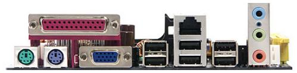
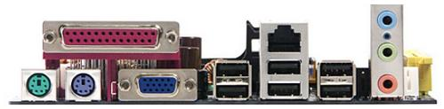
La transmisión de datos en serie consiste en enviar datos mediante un solo hilo: los bits se envían uno detrás del otro
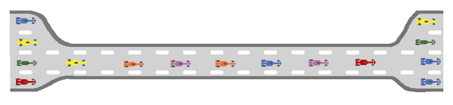La transmisión de datos paralela consiste en enviar datos en forma simultánea por varios canales (hilos).
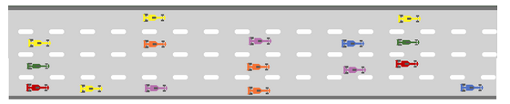Puerto de serie
Puerto de paralelo
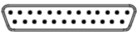Puerto PS/2, Se utiliza principalmente para conectar teclados y ratones a los equipos.
Audio (visto en las tarjetas de expansión)
Video (visto en las tarjetas de expansión)
Puertos USB (Bus de serie universal)
Conectores «Tipo A», que tienen forma rectangular y se utilizan generalmente para dispositivos que consumen poco ancho de banda (como teclados, ratones, y cámaras Web)
Conectores «Tipo B», que tienen forma cuadrada y se utilizan generalmente para dispositivos con altos requisitos de ancho de banda (como discos rígidos externos)

Conector FireWire, es un puerto que se encuentra en algunos equipos para conectar dispositivos periféricos.
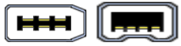
Conector RJ45 (Puerto LAN o Puerto Ethernet)

Conector eSATA
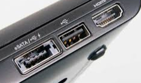Velocidades
USB 1.0 |
0,19 MB/s |
USB 1.1 |
1,5 MB/s |
USB 2.0 |
60 MB/s |
USB 3.0 - 3.1 |
600 - 1200 MB/s |
Firewire |
100-400 MB/s |
e-SATA |
600 MB/s |
Thunderbolt |
2.5 -5 GB/s |
Ejemplo (ROG STRIX X299-E GAMING II):

USB 2.0
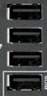USB 3.2

BIOS FlashBackTM button

intel® LAN
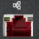
Realtek® 2.5G LAN


Wi-Fi 802.11 (Antena MMCX)
Optical S/PDIF Out
 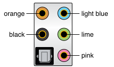
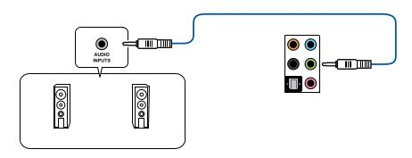
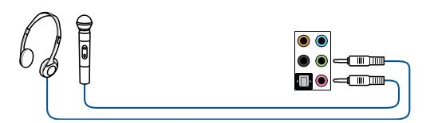
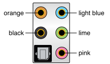
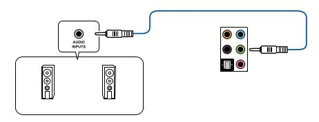
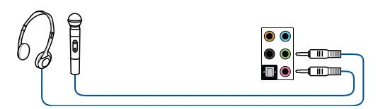

 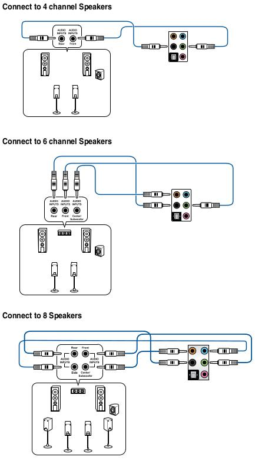
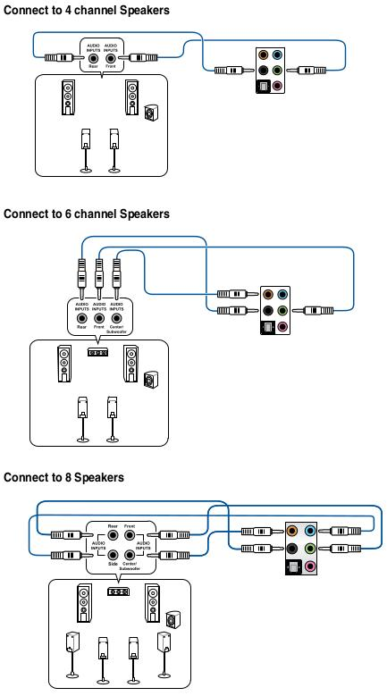